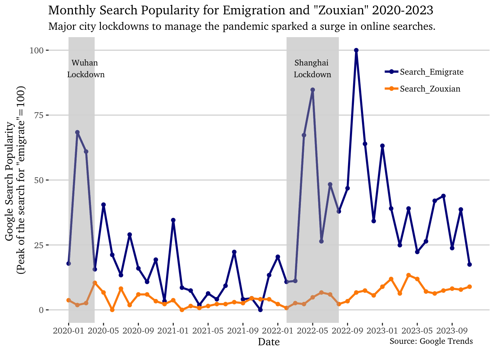

Code
## Prepare google trends data for plotting
trends <- read_csv("data/google_trends.csv")
colnames(trends) <- c("Week", "Search_Emigrate", "Search_Zouxian")
## Convert Week to Year and Month and
## Get the sum of search for each month
trends <- trends %>%
mutate(Date = as.Date(Week, format = "%m/%d/%y"),
Year = as.numeric(format(Date, "%Y")),
Month = as.numeric(format(Date, "%m")),
Search_Emigrate = as.integer(Search_Emigrate),
Search_Zouxian = as.integer(Search_Zouxian)) %>%
group_by(Year, Month) %>%
summarise(Search_Emigrate = sum(Search_Emigrate, na.rm = TRUE),
Search_Zouxian = sum(Search_Zouxian, na.rm = TRUE)) %>%
ungroup() %>%
mutate(Date = paste(Year, Month, sep = "-")) %>% # Combine year and month to Date
select(Date, Search_Emigrate, Search_Zouxian) %>%
# Remove the last row as it is incomplete
filter(Date != "2023-12")
## Stardardize the Search_Emigrate using min-max normalization and ajust the scale scale for Search_Zouxian accordingly
range = max(trends$Search_Emigrate) - min(trends$Search_Emigrate)
trends <- trends %>%
mutate(Search_Emigrate = 100 * (Search_Emigrate - min(Search_Emigrate)) / range,
Search_Zouxian = Search_Zouxian * (100/range))
## Plot the google trends data with a line chart
trends$Date <- gsub("-(\\d)$", "-0\\1", trends$Date)
trends$Date <- as.yearmon(trends$Date, "%Y-%m")
breaks <- seq(min(trends$Date), max(trends$Date), by = 4/12)
ggplot(trends, aes(x = Date)) +
geom_point(aes(y = Search_Emigrate, color = 'Search_Emigrate'), size = 1.5 ) +
geom_line(aes(y = Search_Emigrate, color = 'Search_Emigrate'), size = 1) +
geom_point(aes(y = Search_Zouxian, color = 'Search_Zouxian'), size = 1.5 ) +
geom_line(aes(y = Search_Zouxian, color = 'Search_Zouxian'), size = 1) +
geom_rect(aes(xmin = as.yearmon("2020-01"), xmax = as.yearmon("2020-04"), ymin = -Inf, ymax = Inf), fill = "lightgrey", alpha = 0.01) +
geom_rect(aes(xmin = as.yearmon("2022-02"), xmax = as.yearmon("2022-08"), ymin = -Inf, ymax = Inf), fill = "lightgrey", alpha = 0.01) +
ggplot2::annotate("text", x = as.yearmon("2020-02")+0.1, y = 93, label = "Wuhan \nLockdown", color = "black",size = 3, family="Charter") +
ggplot2::annotate("text", x = as.yearmon("2022-05"), y = 93, label = "Shanghai \nLockdown", color = "black", size = 3, family="Charter") +
scale_x_yearmon(breaks = breaks, labels = date_format("%Y-%m")) +
labs(title = "Monthly Search Popularity for Emigration and \"Zouxian\" 2020-2023",
subtitle = "Major city lockdowns to manage the pandemic sparked a surge in online searches.",
x = "Date", y = "Google Search Popularity \n(Peak of the search for \"emigrate\"=100)") +
ggplot2::annotate("text", x = Inf, y = 0, vjust = 6, hjust = 1.2,
colour = "black",
label = "Source: Google Trends", size = 3, family="Charter") +
coord_cartesian(clip="off") +
theme_hc() +
theme(axis.text.x = element_text(angle = 0),
text=element_text(size=11, family="Charter"),
legend.position = c(0.85,0.85),
legend.title = element_blank(),
legend.spacing.x = unit(0, "cm"),
legend.spacing.y = unit(0, "cm")
) +
scale_color_manual(values = c('Search_Emigrate' = 'darkblue', 'Search_Zouxian' = 'darkorange'))